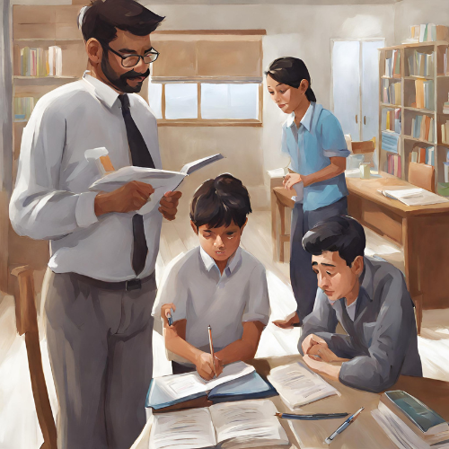

I'm a third year student at IIIT Delhi enrolled in Computer Science & Design Branch. I had completed my schooling from my home town Jind, Haryana. I achieved an AIR 1555 in Joint Entrance Examination (JEE) Mains 2021. I have expertise in web development, UI/UX design and Data visualization. I am currently working as a research intern at Complex Systems Laboratory, Delhi as a lead web developer. As an engineer developer, I am a dedicated problem solver with a passion for creating innovative solutions that drive progress and enhance user experience.
Developed a robust licence authentication system integrating RSA encryption for secure data transmission. Created seamless integration with mutual Kerberos authentication to verify both policemen and the central server. Implemented efficient protocols ensuring the confidentiality and integrity of licence information exchanges.Tech Stack: Python, Socket Programming, Visual Studio Code
This project involves developing an advanced encryption system in C++, combining cutting-edge cryptographic techniques and efficient algorithms to craft a robust platform ensuring data security. With high reliability and performance, it caters to diverse applications, from secure communication channels to data protection in storage environments.Tech Stack: C++, Visual Studio Code
Developed an application managing companies & students through a single Command Line Interface coded in Java. Enabled keeping track of 1000+ students and companies statuses ensuring easier management and fluid placements. Students can browse through the listed companies, based on the established eligibility criteria, companies extend offers.
Tech Stack: Java, IntelliJ IDEA CE
Developed an online retail store handling 1000+ customers with Command Line Interface coded in Python. Enabled keeping track of 1000+ daily use items ensuring easier inventory management and fluid transactions. Created database schema and managed the mySQL infrastructure to query on tables through real-time transactions.Tech Stack: Python, mySQL, DataGrip, Lucidchart, Visual Studio Code
Created and tested a parking lot detection system using MATLAB to detect free parking spots in a parking lot. Implemented an economically feasible alternative for parking lot detection system using Image processing. Involves a 5-layer process involving steps from reading the image to calculating total number of parking slots available.Tech Stack: MATLAB
This project introduces an RSA-based communication system where clients access each other's public keys from a centralized distribution system, ensuring secure and authenticated interactions. Leveraging RSA encryption, our solution safeguards data authentication and integrity in diverse communication scenarios.Tech Stack: Python, Visual Studio Code
This project entails the development of a specialized user program in C, providing essential Linux operating system services. Within the Artix environment using VirtualBox, I’ve implemented three internal commands and five external commands, enriching the user experience with enhanced functionality and efficiency.Tech Stack: C, Visual Studio Code
Crafted a Tank Wars inspired game, merging classic nostalgia with modern design for an immersive gaming experience, bringing together elements of strategic gameplay and dynamic visuals. Utilized LibGDX in a Gradle project, coded it in JAVA on Android Studio for a dynamic application.Tech Stack: Java, LibGDX, Gradle, Android Studio
Created an application designed for clients, administrators, and product vendors, offering various membership tiers for customer benefits. Administrators have the capability to offer tailored discounts based on requests from product sellers, ensuring personalized interactions and facilitating business growth.Tech Stack: Java, LibGDX, Gradle, Android Studio
CareTrack: A Monitoring Platform
View Full Project
Designed and developed two mobile applications aimed at preventing mental health issues. The first app, tailored for the "Observant," diligently monitors crucial parameters relevant to mental well-being. Meanwhile, the second app, designed for the "Observer," receives pertinent data from the Observant's app, enabling concerned individuals to vigilantly monitor the mental health of their loved ones.Tech Stack: Figma, Miro
Home Tutor Locator

View Full Project
Created of a home tutor locator prototype tailored to one’s area, allowing users to find tutors based on their specified preferences for rate, subject expertise, and distance. Through this platform, users can effortlessly connect with qualified tutors who match their criteria. Available tutors can also register themselves onto this platform providing them a channel to connect to potential tuition seekers.Tech Stack: Figma, Miro